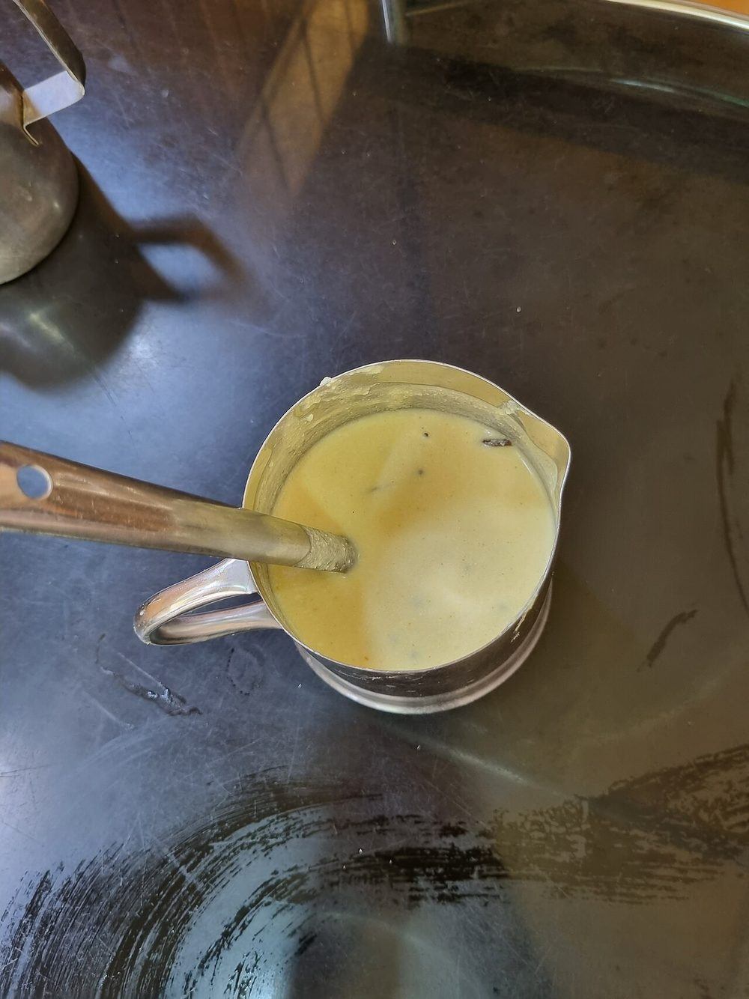

Contains: dairy
Ingredients
Quantities for 4.
- 500g, sour and well whisked Yogurta day-old yogurt is ideal
- 300g, peeled and cubed Ash Gourdor raw banana, cut the same way
- 3/4 cup, grated Coconut
- 3 Green Chilli
- 1/2 tsp Cumin Seeds
- 1/2 tsp Turmeric
- 1 tbsp Coconut Oil
- 1 tsp Mustard Seeds
- 1/4 tsp Fenugreek Seedswhole seeds, not dried leaves
- 2, broken Dried Red Chilli
- 2 sprigs Curry Leaves
- to taste Salt
Cookware
stovetop, blender
Before you start
- Take the yogurt out of the fridge 30 minutes ahead. Cold yogurt hitting a hot pan splits immediately.
- Whisk the yogurt completely smooth with 1/2 cup water before it goes anywhere near heat. Any lump will curdle.
- Grind the coconut, green chillies, cumin and turmeric to a fine paste with 4 tbsp water. Fine matters: a gritty paste makes a gritty curry.
Method
- Cook the ash gourd with the salt and 1/2 cup water in a wide pan, covered, for 8 minutes until soft and translucent.
- Stir in the ground coconut paste and simmer 4 minutes on low, until the raw coconut smell has gone.
- Take the pan off the heat completely and let it cool for 3 minutes.This pause is what keeps the yogurt from splitting. Do not skip it.
- Pour in the whisked yogurt, stirring as you go.
- Return to the lowest possible heat and warm, stirring constantly, for 3-4 minutes until it just steams and thickens slightly.The instant you see a bubble, pull it off. Boiled pulissery separates and cannot be rescued.
- Taste for salt and set aside covered.
- Heat the coconut oil in a small pan, pop the mustard seeds, then add the fenugreek seeds, broken red chillies and curry leaves and fry 20 seconds.Fenugreek burns bitter fast. It should darken only a shade.
- Pour the tempering over the curry and cover for 5 minutes before serving with rice.
Storage
Keeps 2 days refrigerated and the sourness deepens. Reheat only to lukewarm over the lowest heat, or serve at room temperature as they do in Kerala.
Nutrition Medium estimate
| Per serving264 g | Per 100 g | |
|---|---|---|
| Calories | 193+ kcal | 74+ kcal |
| Protein | 6.5+ g | 2+ g |
| Carbohydrate | 15.0+ g | 6+ g |
| of which sugars | 8.6+ g | 3+ g |
| Fibre | 2.8+ g | 1+ g |
| Fat | 12.9+ g | 5+ g |
| of which saturated | 9.9+ g | 4+ g |
| of which unsaturated | 2.1+ g | 1+ g |
The + means ingredients given to taste rather than by weight are counted as zero, so the true figure is a little higher than shown. Worked out from the listed quantities. Some of the ingredient list is given to taste rather than by weight, so treat these as a guide. Ingredients given to taste rather than by weight are counted as zero, so the real figure is a little higher than this. The + says so. Some ingredients have no exact match in the nutrient database and use the nearest equivalent: ash gourd, curry leaves. Estimated from raw ingredients using USDA FoodData Central. Cooking changes are not modelled, and added salt is excluded, so sodium is not given.
Recipe v1.0.0, last updated 2026-07-31. Curated for Khaana and kept under version control.